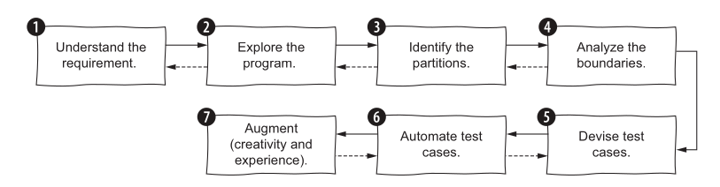

Choosing what to test, and what makes a test good
Quick recap
Last block you learned to write one good test: Arrange-Act-Assert, one Act, no branching, a name that states a fact. Coverage tells you what you missed, never what you proved.
Two questions remain:
- Which tests should exist? → Lecture 9
- How do you tell a good suite from a bad one? → Lecture 10
Lecture 9: Choosing what to test
Where do test cases come from?
Only two places.
| Source | Called | You look at |
|---|---|---|
| What the code should do | Specification testing | the requirements |
| What the code does do | Structural testing | the implementation |
- Derive from the code and you inherit its bugs. A test written from a buggy implementation asserts the bug.
- Derive from the spec and you can catch code that is confidently wrong.
An LLM writes tests from your code. You are the only one who has the specification.
Four ways to derive test cases
- Specification tests — from what it should do, not how it is written.
- Boundary tests — just below, at, and just above every limit.
- Property-based tests — state a property, let the framework generate hundreds of inputs.
- Structural tests — from the code's own paths and branches.
Today: 1 and 2. They need no tooling beyond what you already have, and they are the two an LLM cannot do for you.
Specification-based testing

The specification
gradeFromMarks(int marks)returns a grade based on:
- 90–100 →
"A"- 75–89 →
"B"- 50–74 →
"C"- below 50 →
"F"
Read it before you read any code. Write down what it promises.
Step 1: partition the input
Every input value falls into exactly one class where behaviour is uniform.
| Partition | Expected |
|---|---|
marks < 50 |
"F" |
50 ≤ marks ≤ 74 |
"C" |
75 ≤ marks ≤ 89 |
"B" |
90 ≤ marks ≤ 100 |
"A" |
marks < 0 |
the spec does not say |
marks > 100 |
the spec does not say |
One test per partition. Pick the simplest value in each — 60, not 61.5.
Step 2: the partitions the spec forgot
The last two rows are the point of the exercise.
std::string gradeFromMarks(int marks) {
if (marks >= 90) return "A";
else if (marks >= 75) return "B";
else if (marks >= 50) return "C";
else return "F";
}
TEST(GradeSpec, MarksAboveHundredAreNotSpecified) {
EXPECT_EQ(gradeFromMarks(150), "A"); // passes
}
- The spec says A means 90–100. The code awards A for 150, and for 10000.
- Nothing in the code is wrong. The specification is incomplete.
Specification testing finds holes in the specification. Structural testing never can — the code has no hole, only a behaviour.
Generate this function from that spec with any model and you get this exact code. Ask the model to write tests for the code and every one of them passes.
Step 3: the seven-step loop
- Understand the requirements — inputs, outputs, types, domains.
- Explore the program — try inputs, build a mental model.
- Identify partitions — of every input, and of the output.
- Find boundaries — where partitions meet.
- Design cases — combine partitions; test exceptional cases once.
- Automate — clear inputs, explicit expected values.
- Refine — reread for gaps.
It is a loop, not a checklist. Writing step 6 sends you back to step 3.
What matters in practice
- Depth follows risk. Test the fee calculation harder than the tooltip.
- Partition or boundary — don't argue. What matters is that the case exists.
- Vary one seed input. Start from
"abc"and tweak it; debugging stays easy. - Keep inputs boring. Small integers, short strings, unless complexity is the point.
- Test null only where null can occur. A UI boundary, not an internal helper.
- Split the method when the combinations explode. Untestable usually means too big.
Partitions in a real code base
The academic calendar reassigns dates — "07-08-2026 to be treated as Tuesday". The parser must recognise those and ignore everything else.
| Case | Partition |
|---|---|
"To be treated as Tuesday" |
canonical form |
"To be Treated as Friday" |
capitalisation varies in the real data |
"to be treated as wednesday" |
whitespace varies too |
"Orientation of Fresh BTech Students" |
a real event, not a substitution |
"Instruction begins" |
ditto |
"" |
empty |
Six cases, three partitions: parses, does not parse, degenerate. The three formatting variants are one partition — they exist because the data is inconsistent, and that is a domain fact no amount of reading the code reveals.
Boundary testing
Bugs cluster where partitions meet. >= written as >, a loop that stops one
short, a cutoff that belongs to the wrong side.
For a condition like marks >= 90:
- on-point — the value in the condition:
90 - off-point — the nearest value that flips it:
89
Test both. One of them is where the bug lives.
Every boundary in gradeFromMarks
| Boundary | off | on |
|---|---|---|
| F / C | 49 |
50 |
| C / B | 74 |
75 |
| B / A | 89 |
90 |
| top of range | 100 |
101 — unspecified |
Seven values pin every cutoff. You do not need 63, 81, and 95 as well.
Boundaries in a real code base
"Is this room free from 14:00 to 16:00?" is an interval-overlap question, and interval overlap is all boundary:
| Requested | Occupied | Free? | Why it is on the list |
|---|---|---|---|
| 14–16 | 15–16 | no | partial overlap |
| 14–16 | 12–14 | yes | touches at the start — off-point |
| 14–16 | 16–18 | yes | touches at the end — off-point |
| 14–18 | 15–16 | no | occupied sits inside |
| 15–16 | 14–18 | no | occupied surrounds |
The two yes rows are the whole test. Get < and <= backwards and a room
booked 12:00–14:00 blocks the 14:00 lecture.
Writing them without duplication
Seven near-identical TEST() blocks is copy-paste. GoogleTest has parameterized
tests for exactly this shape.
Three pieces:
- A class inheriting
::testing::TestWithParam<T>—Tis your row type. TEST_P(...), reading the row withGetParam().INSTANTIATE_TEST_SUITE_P(...)supplying the rows.
The whole thing
#include <gtest/gtest.h>
#include <string>
#include <tuple>
class GradeCutoff : public ::testing::TestWithParam<std::tuple<int, std::string>> {};
TEST_P(GradeCutoff, ReturnsTheGradeTheSpecPromises) {
auto [marks, expected] = GetParam(); // C++17 structured binding
EXPECT_EQ(gradeFromMarks(marks), expected);
}
INSTANTIATE_TEST_SUITE_P(OnAndOffPoints, GradeCutoff, ::testing::Values(
std::make_tuple(49, "F"), std::make_tuple(50, "C"),
std::make_tuple(74, "C"), std::make_tuple(75, "B"),
std::make_tuple(89, "B"), std::make_tuple(90, "A"),
std::make_tuple(100, "A")
));
Seven tests from one body. Adding a boundary is adding a line.
[ PASSED ] 7 tests.
Why the table beats seven functions
- A failure reports
OnAndOffPoints/GradeCutoff.ReturnsTheGradeTheSpecPromises/4— row 4, and the row is right there. - The table is the partition analysis. Reviewers read your reasoning, not your loops.
- Recall the antipattern: a parameterized test must stay linear. Never branch on the expected value — put the expectation in the table.
Exercise
- Implement add-strings — add two non-negative integers given as strings, without converting them to integers.
- Before writing any code, write the partition table. Include what the spec does not say.
- Turn the boundaries into one
INSTANTIATE_TEST_SUITE_P.
Bring the table. That is what gets marked, not the implementation.
Lecture 10: What makes a good test
Four attributes
Every automated test — unit, integration or end-to-end — can be scored on four:
- Protection against regressions
- Resistance to refactoring
- Fast feedback
- Maintainability
They are not independent. That is the whole problem.
Protection against regressions
A regression is a feature that stops working after a change.
This attribute measures how likely the test is to notice. It grows with:
- the amount of code the test executes,
- the complexity of that code,
- the code's domain significance.
A test over your payment logic protects more than a test over a getter — even though both are one test.
Resistance to refactoring
Refactoring changes code without changing observable behaviour.
Resistance to refactoring is how much restructuring a test survives without raising a false alarm.
- A test that fails when you rename a private method is not protecting you.
- It is reporting that the code changed. You knew that.
The two ways a test can lie
| Functionality correct | Functionality broken | |
|---|---|---|
| Test passes | ✅ | ❌ false negative — missed bug |
| Test fails | ❌ false positive — false alarm | ✅ |
- Protection against regressions attacks the top-right.
- Resistance to refactoring attacks the bottom-left.
Everyone worries about missed bugs. False alarms are what actually kill a suite.
What causes a false positive?
The more a test is coupled to implementation details of the system under test, the more false alarms it raises.
The only fix is to decouple: assert on observable behaviour, not on how the result was reached.
Test what the function returns. Not which private helper it called on the way.
Why false alarms are the worse failure
- They dilute your willingness to react. You get used to red and stop reading it.
- They destroy trust in the suite as a safety net.
A suite nobody trusts is deleted, or — worse — ignored while still running.
Fast feedback
How quickly the test runs.
- Slow tests get run less often.
- Tests run less often catch regressions later.
- Later means a bigger diff to search.
This is Fowler's argument from the opening of this block, restated as a measurable property. Your 173-test suite in 1.7 seconds is run every save. A 20-minute suite is run at 5pm.
Maintainability
Two components:
- How hard the test is to understand. Smaller is more readable.
- How hard the test is to run. Fewer out-of-process dependencies — no database, no network, no clock — means fewer things to keep alive.
The recap example: test_parse_day_substitution
is a table and a one-line assert. Nothing to keep running.
The trade-off

You cannot maximise all four.
- An end-to-end test scores high on regression protection and refactoring resistance, and terribly on speed.
- A trivial unit test is fast and maintainable and protects nothing.
Resistance to refactoring is the one attribute you cannot trade away. A test is either coupled to implementation details or it isn't; there is no useful middle. Pick your position on the other three.
What this is worth when a machine writes the code
- An agent refactors freely. A suite full of false positives goes red on every run, you learn to ignore it, and you merge a diff nobody read.
- An agent cannot tell a false alarm from a real regression. It will "fix" your production code to satisfy a test asserting an implementation detail.
- Regression protection is what lets you accept a change you did not write.
A codebase with good tests is an agent's superpower. A codebase without them is a liability.
Scoring a test you have already seen
| Attribute | Score | Why |
|---|---|---|
| Protection | high | interval logic, real domain significance |
| Refactoring resistance | high | asserts the answer, not how it was computed |
| Fast feedback | medium | writes to a real SQLite database |
| Maintainability | medium | needs rows inserted before it can ask anything |
Fixing the middle two is the subject of the next block: test doubles.
References
- Chapter 4, Unit Testing, Principles Practices and Patterns by Vladimir Khorikov
- Chapters 2–3, Effective Software Testing by Maurício Aniche — specification and boundary testing
- Parameterized tests, GoogleTest documentation
- Worked examples from DAU-buddy, pinned at commit
b909c22.